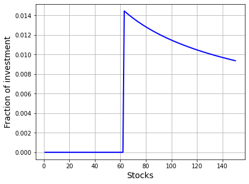

Robust Portfolio with Budgeted Uncertainty#
This section uses RSOME to solve the followig robust portfolio model as introduced by [BS04],
where \(n\) is the total number of stocks, the affine term \(p_i + \delta_iz_i\) represents the random stock return, and the random variable \(z_i\) is between \([-1, 1]\), so each stock return has an arbitrary distribution in the interval \([p_i-\delta_i, p_i + \delta_i]\). The uncertainty set \(\mathcal{Z}\) is given below,
where \(\Gamma\) is the budget of uncertainty parameter. Values of the budget of uncertainty and other parameters are presented as follows.
The robust optimization model can be implemented by the following Python code.
from rsome import ro
import rsome as rso
import numpy as np
n = 150 # number of stocks
Gamma = 5 # budget of uncertainty
i = np.arange(1, n+1) # indices of stocks
p = 1.15 + i*0.05/150 # mean returns
delta = 0.05/450 * (2*i*n*(n+1))**0.5 # deviations of returns
model = ro.Model()
x = model.dvar(n) # fractions of investment
z = model.rvar(n) # random variables
model.maxmin((p + delta*z) @ x, # objective function
forall=(z.norm('inf') <= 1,
z.norm(1) <= Gamma)) # the budget of uncertainty
model.st(sum(x) == 1) # summation of x is one
model.st(x >= 0) # x is non-negative
model.solve() # solve the model
Being solved by the Scipy LP solver...
Solution status: 0
Running time: 0.0263s
The optimal investment decision can be visualized by the diagram below.
import matplotlib.pyplot as plt
obj_val = model.get() # the optimal objective value
x_sol = x.get() # the optimal investment decision
plt.plot(range(1, n+1), x_sol,
linewidth=2, color='b')
plt.xlabel('Stocks', fontsize=14)
plt.ylabel('Fraction of investment', fontsize=14)
plt.grid()
plt.show()
print('Objective value: {0:0.4f}'.format(obj_val))

Objective value: 1.1709
Reference
Dimitris Bertsimas and Melvyn Sim. The price of robustness. Operations research, 52(1):35–53, 2004.